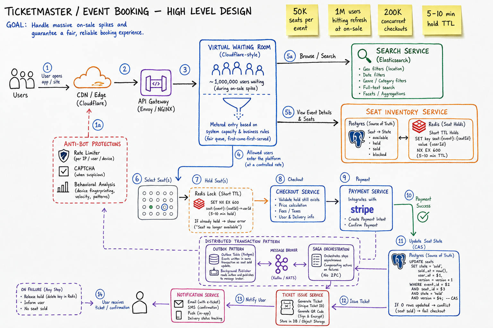
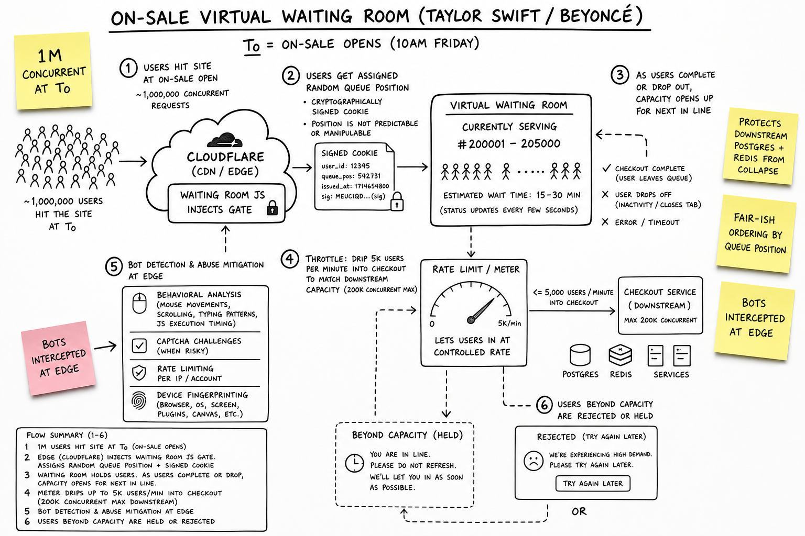
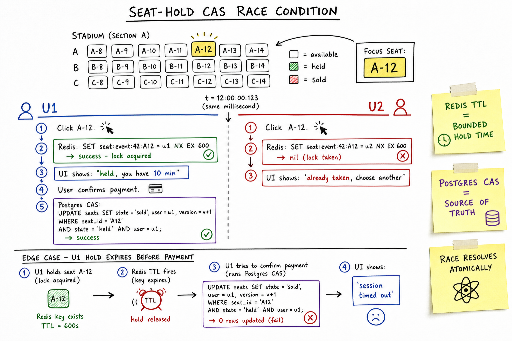

Ticketmaster / Event Ticketing // HLD
Flash-sale event ticketing at stadium scale — 500K concurrent users, 50K purchases/min, 10-minute seat holds. A virtual waiting room throttles entry; seat inventory is sharded by event_id with CAS (compare-and-swap) holds in Redis + Postgres; checkout uses idempotent order creation and a payment saga that releases seats on failure.

Whiteboard HLD — two flows. ON-SALE ENTRY: browser hits CDN/WAF → Waiting Room Service issues a signed queue token (JWT + Redis sorted-set position) → when admitted, token grants access to Event API at ~500 req/s per event shard. SEAT PURCHASE: admitted user loads seat map (CDN-cached static JSON + live availability overlay from Redis) → POST /hold uses CAS on seat version (Redis SET NX + Postgres row lock fallback) → 10-min TTL hold → checkout with Idempotency-Key creates Order via outbox → Payment Service → on success seats SOLD, on failure saga releases holds. Inventory shard key = event_id; hot events get dedicated Redis cluster + queue partition.
01 — Requirements
Functional
- Browse/search events by artist, venue, city, date range
- View interactive seat map with real-time availability (section, row, seat)
- Hold selected seats for a fixed TTL (default 10 minutes) while user checks out
- Checkout: apply promo codes, select delivery method, pay, receive e-tickets
- Release held seats automatically on TTL expiry or explicit cancel
- Order history, ticket transfer, and refund (admin/self-service)
- Waiting room / virtual queue during on-sale spikes (fair admission)
Non-Functional
- Flash-sale spike: 500K concurrent users, 50K successful purchases/min at on-sale for marquee events
- Inventory correctness: zero double-booking; at-most-one buyer per seat (strong per-seat consistency)
- Hold TTL: 10 minutes; expired holds must release within seconds (not minutes)
- Fairness: FIFO queue admission; bots must not bypass the waiting room
- Availability: 99.95% during on-sales; partial degradation (browse-only) beats total outage
- Latency: seat map load p99 < 500ms; hold attempt p99 < 200ms; checkout p99 < 2s
- Idempotency: duplicate clicks / network retries must not double-charge or double-hold
01a — Core Entities
| Entity | Key Fields | Notes |
|---|---|---|
| Event | event_id, artist_id, venue_id, on_sale_at, status (SCHEDULED/ON_SALE/SOLD_OUT), price_tiers | Root aggregate for inventory sharding. Hot events get dedicated infra. |
| Venue | venue_id, name, city, capacity, timezone | Static metadata; seat map template lives here. |
| SeatMap | seat_map_id, venue_id, sections[], rows[], seats[] (geometry + labels) | Mostly immutable JSON; CDN-cacheable. Availability is a separate overlay. |
| Seat | (event_id, section, row, seat_num), seat_id, price_tier, status, version | Per-event inventory unit. version incremented on every state transition for CAS. |
| Reservation | reservation_id, event_id, seat_ids[], user_id, status (HELD/CONFIRMED/RELEASED), expires_at, version_snapshot | Short-lived hold; maps 1–8 seats typically. TTL enforced in Redis + DB. |
| Order | order_id, user_id, event_id, line_items[], total, payment_status, idempotency_key | Created at checkout start; finalized after payment capture. |
| User | user_id, email, payment_methods[], purchase_history | Authenticated for purchase; anonymous OK for browse. |
| WaitingRoomToken | token (JWT), event_id, queue_position, issued_at, admitted_at?, signature | Signed admission pass; Redis ZSET tracks position; ~500 users/min admitted per hot event. |
| Ticket | ticket_id, order_id, seat_id, qr_payload, status (VALID/TRANSFERRED/SCANNED) | Issued post-payment; barcode signed to prevent forgery. |
01b — API Design
Browse & discovery
GET /events?city=NYC&from=2026-06-01&to=2026-12-31&cursor=...
-> 200 { events[], next_cursor }
GET /events/{event_id}
-> 200 { event, venue, on_sale_status, price_range }
GET /events/{event_id}/seat-map
-> 200 { sections[], geometry, price_tiers }
(static; Cache-Control: public, max-age=3600)
Waiting room (on-sale gate)
POST /events/{event_id}/queue/join
body: { device_fingerprint? }
-> 202 { queue_token, position, estimated_wait_min }
GET /events/{event_id}/queue/status
Authorization: Bearer {queue_token}
-> 200 { position, admitted: false }
-> 200 { admitted: true, shop_token, ttl_sec: 1800 }
Hold & release (hot path)
POST /events/{event_id}/holds
Authorization: Bearer {shop_token}
Idempotency-Key: {uuid}
body: { seat_ids: ["A-12-4", "A-12-5"] }
-> 201 { reservation_id, expires_at, seats[] }
errors: 409 (seat taken), 403 (not admitted), 429 (rate limit)
DELETE /holds/{reservation_id}
-> 204
Checkout & payment
POST /orders
Idempotency-Key: {uuid}
body: { reservation_id, payment_method_id, promo_code? }
-> 201 { order_id, status: "PENDING_PAYMENT" }
-> 200 { order_id, status: "CONFIRMED", tickets[] } # idempotent replay
GET /orders/{order_id}
POST /orders/{order_id}/refund # admin / policy-gated
Internal (service-to-service)
POST /internal/holds/expire-sweep # cron / Kafka consumer
POST /internal/inventory/reconcile # Redis <-> Postgres drift fix
POST /internal/events/{id}/cache-warm # pre-load seat map + Redis on sale start
The non-obvious contract: every mutating call carries an Idempotency-Key (see Idempotency primer). Hold and checkout keys are scoped per user+seats and stored 24h in Redis/Postgres. Duplicate POST /hold with same key returns the original reservation, not a second hold. Duplicate POST /orders with same key returns the original order — critical for double-click and mobile retry storms during on-sales.
02 — Estimation
On-sale spike (marquee stadium event):
Concurrent users in waiting room: 500,000
Admitted to shop concurrently: ~50,000 (10% active shoppers)
Target purchases/min at peak: 50,000
Purchases/sec: ~833/sec
Hold attempts/sec (3× purchase rate): ~2,500/sec (users click around)
Hold TTL: 10 minutes
Max in-flight holds (worsty case): 50K/min × 10 min = 500K holds
(most expire unused; plan for 200K active)
Seat inventory per event:
Stadium capacity: 50,000–80,000 seats
Seat record: ~200 B (status + version + price)
Per-event inventory: 80K × 200B = 16 MB (fits in Redis)
QPS breakdown (single hot event):
Waiting room polls: 500K users / 30s = ~17K req/s
Seat map reads: ~5K req/s (CDN absorbs 90%)
Hold writes: ~2.5K req/s
Checkout writes: ~833 req/s
Storage (Postgres, all events/year):
10M events × 80K seats = 800B seat-rows (too big naively)
Reality: only ON_SALE + recent events materialize per-seat rows
Active inventory rows: ~50M seats × 200B = 10 GB
Orders: 500M orders/yr × 1KB = 500 GB
Redis (hot event):
Seat status hash: 80K × 50B = 4 MB per event
Active holds: 200K × 200B = 40 MB
Waiting room ZSET: 500K × 40B = 20 MB
Dedicated Redis cluster per A-list on-sale03 — Why It's Hard
Event ticketing is a flash-sale inventory problem, not a steady-state e-commerce problem. When a Taylor Swift on-sale opens, 500K users hammer the same event_id shard within seconds — a classic thundering herd that melts generic web stacks. The core tension is inventory consistency vs latency: you must guarantee zero double-booking (strong per-seat consistency via CAS or row locks), yet hold attempts must complete in <200ms under 2,500 writes/sec. A waiting room adds fairness vs revenue trade-offs (throttle entry without losing legitimate buyers). Payment adds a distributed transaction: seats HELD → charged → SOLD, with saga compensation if Stripe times out. See Concurrency Control for the consistency toolkit.
04 — Architecture
┌──────────── CDN / WAF / Bot Detection ────────────┐
│ static seat maps, event pages, CAPTCHA assets │
└────────────────────────┬──────────────────────────┘
│
Users ──► API Gateway / LB ──► ┌──────────────┴──────────────┐
│ Waiting Room Service │
│ (queue token, admission) │
└──────────────┬──────────────┘
│ admitted only
┌─────────────────────────────┼─────────────────────────────┐
│ │ │
Event Service Inventory Service Order Service
(browse, metadata) (hold, release, CAS) (checkout, saga)
│ │ │
└──────────────┬──────────────┴──────────────┬──────────────┘
│ │
Postgres (orders, Redis Cluster
events, seats) (seat status, holds,
│ waiting room ZSET)
│
Kafka (hold events, Payment Service
order outbox, expiry) (Stripe / Adyen)
05 — Waiting Room / Virtual Queue
Without a waiting room, 500K concurrent users would DDoS your inventory service. The waiting room is a admission control layer — not just a UX spinner.
- Join:
POST /queue/joinaddsuser_session_idto Redis ZSETqueue:{event_id}with score = monotonic timestamp (FIFO). - Token: Signed JWT contains
event_id,position,issued_at. Client polls/queue/statusevery 15–30s (not faster — saves 17K→3K req/s). - Admission rate: Background worker admits ~500 users/min per event (configurable) by moving entries from ZSET to an
admitted:{event_id}SET with TTL. Rate matched to inventory service capacity (~2.5K holds/s with headroom). - Shop token: On admission, issue a short-lived
shop_token(30 min) required on all hold/checkout APIs. Gateway validates before routing to Inventory. - Fairness: Strict FIFO by ZSET score. No priority lanes (VIP pre-sales are separate events with separate inventory pools).
- Rate limiting entry: Per-IP join limit (5/min), device fingerprint dedup, CAPTCHA after N joins. Integrates with Rate Limiter patterns (token bucket at edge).

Waiting room zoom — 500K users in Redis ZSET queue:{event_id}. Admission worker drains at 500/min into admitted SET. Client polls with queue JWT; on admission receives shop_token. Edge CDN serves static “you are #47,832” page; only admitted traffic hits origin Inventory Service. Sticky note: poll interval 30s × 500K = ~17K req/s → mitigated by edge caching of status responses and jittered polling.
06 — Seat Map & Inventory
Sharding
All seat inventory for an event lives on one shard keyed by event_id. This avoids cross-shard transactions when holding adjacent seats. Hot events get a dedicated shard (isolated Postgres partition + dedicated Redis cluster).
Seat status state machine
AVAILABLE ──(hold CAS success)──► HELD ──(payment success)──► SOLD
▲ │
│ │ TTL expiry / payment fail / cancel
└────────(release)──────────────┘
Rules:
• Only AVAILABLE → HELD is user-initiated (CAS)
• HELD → SOLD requires confirmed payment (Order Service)
• HELD → AVAILABLE is automatic on TTL (sweeper) or saga compensation
• SOLD is terminal (refund creates credit, not re-AVAILABLE during event)
Data layout
- Static seat map: JSON in S3/CDN — sections, coordinates, labels, price tiers. Immutable per event.
- Live overlay: Redis hash
seats:{event_id}→{seat_id: "AVAILABLE|HELD|SOLD:version"}. Sub-ms reads for map rendering. - Source of truth: Postgres
seatstable with row-level lock on hold. Redis is the fast path; Postgres wins on conflict. - Reconciliation: Nightly job + on-demand after incidents compares Redis vs Postgres; Kafka outbox ensures hold events are durable.
07 — Hold / Reservation with CAS
The hold path is the interview centerpiece. Goal: atomically transition N seats from AVAILABLE → HELD with zero double-booking.
Redis fast path (Redis SET NX + version)
WATCH seats:{event_id}:A-12-4
GET seats:{event_id}:A-12-4 → "AVAILABLE:7"
MULTI
SET seats:{event_id}:A-12-4 "HELD:8" NX # fails if key changed
SET hold:{reservation_id} "{...}" EX 600
EXEC
Alternative (Lua script, atomic):
if redis.call('GET', key) == expected then
redis.call('SET', key, 'HELD:' .. (version+1), 'EX', 600)
return 1
else return 0 end
Postgres fallback (pessimistic / optimistic)
-- Optimistic (preferred under low contention): UPDATE seats SET status = 'HELD', version = version + 1, reservation_id = $1, expires_at = now() + interval '10 min' WHERE event_id = $2 AND seat_id = $3 AND status = 'AVAILABLE' AND version = $4; -- rows affected = 0 → 409 Conflict (someone else got it) -- Pessimistic (high contention alternative): SELECT * FROM seats WHERE seat_id = $1 FOR UPDATE NOWAIT;
TTL enforcement
- Redis key TTL on hold record (600s) + keyspace notification → Kafka
hold.expiredevent - Backup sweeper cron every 30s queries
WHERE status='HELD' AND expires_at < now() - Release = CAS AVAILABLE with version bump; idempotent if already released
Why both Redis and Postgres? Redis gives sub-ms holds at 2.5K/s. Postgres is the audit trail and conflict resolver. Write-through: Redis success → async Postgres via Kafka outbox. On Redis/Postgres drift, Postgres wins and Redis is rebuilt from DB.

CAS hold zoom — Client POST /hold with seat_ids + expected versions. Inventory Service runs Lua script in Redis: compare version, SET HELD, attach 600s TTL. On success, emit HoldCreated to Kafka → Order-DB consumer persists to Postgres. On version mismatch, return 409 with refreshed availability. Postgres row lock shown as fallback path when Redis cluster is degraded. Numbered flow: (1) GET version, (2) CAS write, (3) outbox event, (4) async DB confirm.
08 — Checkout & Payment
Idempotent order creation
POST /orders Idempotency-Key: abc-123
1. Check idempotency store (Redis + Postgres unique index)
2. If replay → return cached 201/200 response
3. Validate reservation still HELD and not expired
4. INSERT order (status=PENDING_PAYMENT) in single DB txn
5. Call Payment Service (Stripe PaymentIntent)
6. On success:
UPDATE seats SET status='SOLD' WHERE reservation_id = ?
UPDATE order SET status='CONFIRMED'
Emit TicketIssued event
7. On payment failure:
Saga: release seats (HELD → AVAILABLE), order status=FAILED
Reservation released for re-purchase
Payment saga (choreography)
- Step 1: OrderCreated → PaymentRequested (Kafka)
- Step 2: PaymentSucceeded → InventoryConfirm (seats SOLD) + TicketGenerate
- Step 3 (compensate): PaymentFailed / PaymentTimeout (30s) → ReleaseHold command → seats back to AVAILABLE
- All steps idempotent via event_id dedup in consumer offset + business-key store
Never mark seats SOLD before payment confirms. The anti-pattern is “optimistic SOLD” — chargebacks and inventory ghosts are worse than a 409 on retry.
09 — Hot Event Scaling
- CDN for static seat maps: 4MB JSON × 5K req/s = 20 GB/s without CDN. Edge-cache seat map + section tiles; only availability overlay hits origin.
- Read replicas: Browse/search on Postgres replicas. All writes (hold, order) go to primary for the event shard.
- Queue sharding: Waiting room ZSET partitioned by
event_id. Each hot event gets dedicated Redis node (no noisy-neighbor from 500 other events). - Pre-warming: T-5 min before on-sale: load seat map into Redis, warm CDN cache, scale Inventory pods 10×, run load test smoke.
- Section-level caching: Availability fetched per section (200 seats) not full 80K map — reduces payload and hot-key risk.
- Graceful degradation: If Inventory overloaded, return 503 with Retry-After on hold; waiting room slows admission. Browse-only mode keeps brand intact.
10 — Anti-Bot & Abuse
- CAPTCHA: hCaptcha/reCAPTCHA on queue join and before hold (adaptive — only when bot score > threshold).
- Device fingerprint: FingerprintJS / Akamai Bot Manager; block >3 queue joins per fingerprint per event.
- Per-IP limits: 10 hold attempts/min, 3 checkout attempts/min via edge rate limiter.
- Queue token binding: shop_token bound to fingerprint + IP /24; transfer triggers re-CAPTCHA.
- Honeypot seats: Hidden seats in map; bot that holds them gets shadow-banned (holds silently fail).
- Resale prevention: Ticket QR rotates (TOTP-style); transfer requires identity verification.
11 — Scaling (1× → 10× → 100×)
| Scale | Traffic | Architecture |
|---|---|---|
| 1× | Local venues, <1K concurrent, <10 purchases/s | Monolith + single Postgres + Redis. No waiting room. Row-level locks sufficient. ~$500/mo. |
| 10× | Regional tours, 50K concurrent, 500 purchases/s | Waiting room for events >10K demand. Inventory Service split out. Redis for seat status. Kafka for hold expiry. Postgres read replicas. CDN for seat maps. |
| 100× | Arena on-sales, 500K concurrent, 50K purchases/min | Per-event inventory shards. Dedicated Redis cluster per hot event. Queue sharding. Multi-region CDN. Payment + Order isolated services. Auto-scale Inventory 50–200 pods pre-on-sale. Chaos-tested failover to Postgres-only holds (10× latency, zero double-book). |
12 — Edge Cases
- Payment timeout: Stripe webhook delayed 60s+. Order stays PENDING; sweeper at 90s triggers saga release. User sees “payment processing” with idempotent retry link.
- Duplicate clicks: Double POST /hold with same Idempotency-Key returns same reservation. Different keys on same seats → second gets 409.
- Partial outage (Redis down): Fail over to Postgres-only holds with
FOR UPDATE NOWAIT. Latency jumps 50ms→300ms but correctness preserved. Waiting room slows admission to match. - Clock skew: Hold TTL uses DB
now()as authority, not client clock. Redis TTL is approximate backup. - User closes browser mid-hold: TTL still expires; seats return automatically. Optional email: “your hold expired.”
- Concurrent hold on overlapping seats: CAS ensures exactly one winner. Loser gets 409 + refreshed map.
- Inventory reconciliation lag: Kafka consumer falls behind → Postgres stale. Mitigation: hold path writes Postgres synchronously for high-value events; async for others.
- Sold-out race: Last seat held by two users — CAS guarantees one 201, one 409. No oversell.
13 — Real-World Equivalents
| System | Pattern |
|---|---|
| Ticketmaster | Queue-it virtual waiting room integration; “Verified Fan” pre-registration reduces bot traffic; dynamic pricing by tier. |
| SeatGeek | Marketplace model (secondary); primary on-sales use similar hold + checkout; open API for partners. |
| AXS (AEG) | Exclusive per-venue platform; Flash Seats (digital-only, NFC entry); queue per event. |
| Eventbrite | General admission (no seat map) for smaller events; quantity-based inventory (500 tickets) not per-seat CAS. |
| Queue-it / Waiting Room as a Service | Third-party virtual queue embedded via JS SDK; admission rate configured per client; used by Ticketmaster, IKEA drops. |
| Shopify / Supreme drops | Same flash-sale DNA: queue + inventory + bot defense; GA inventory instead of seat maps. |
14 — Interview Q&A
Why do you need a waiting room? Can't you just scale the servers?
How do you prevent double-booking of the same seat?
version. Hold succeeds only if current version matches expected AND status is AVAILABLE. Redis Lua script makes this atomic at 2.5K/s. Postgres UPDATE ... WHERE version = ? AND status = 'AVAILABLE' is the durable backstop. Two concurrent holds on seat A-12-4: exactly one gets rows-affected=1, the other gets 409. No distributed lock needed because all seats for an event are on one shard.Redis vs Postgres for inventory — which is source of truth?
What happens when a hold expires while the user is entering credit card info?
How does idempotency work for holds and checkout?
Idempotency-Key header (UUID v4). Server stores (key → response) for 24h in Redis with Postgres unique index backup. Duplicate POST /hold with same key returns original reservation_id (201). Duplicate POST /orders returns original order (200). Different keys attempting same seats: second hold gets 409. This handles double-click, mobile retry, and proxy replays. See Idempotency primer.How would you shard inventory for 10M events?
event_id hash. All seats for one event live on one shard to keep multi-seat holds transactional. Cold events (club shows, 200 seats) share shards. Hot events get dedicated hardware. Cross-event queries (user's order history) go through Order Service, not inventory shards. Re-shard hot event to dedicated node T-1 day before on-sale.General admission (no seat map) vs assigned seating?
INCR sold count, compare to capacity). No per-seat CAS. Risk: oversell by 1 if not atomic — use Redis DECR or Postgres UPDATE capacity SET remaining = remaining - 1 WHERE remaining > 0. Assigned seating is harder (this cheatsheet) but required for venues >5K with tiered pricing. Many systems support both: GA events skip seat map entirely.How do you handle payment failure without losing the seats?
What's the Kafka outbox pattern doing here?
outbox table. Relay process publishes to Kafka topic inventory.holds. Consumers update read models, send confirmation emails, and feed analytics. Guarantees at-least-once delivery; consumers dedupe by hold_id. See Kafka cheatsheet for exactly-once nuances.How do bots bypass waiting rooms in production, and how do you stop them?
How would you test this system before a real on-sale?
SDE2 vs SDE3 — what separates the answers?
SDE3 staff-level: quantifies the spike (500K concurrent, 50K/min), designs waiting room with admission rate matched to inventory QPS, specifies CAS with version column and Redis Lua atomicity, explains idempotency keys on hold + checkout, describes payment saga compensation, names Kafka outbox for durability, plans hot-event sharding and CDN strategy for seat maps, and walks edge cases (Redis down, payment timeout, duplicate clicks) with specific failure modes. The SDE3 answer connects to primitives (concurrency control, idempotency) and names real vendors (Queue-it, Stripe, Redis SET NX).